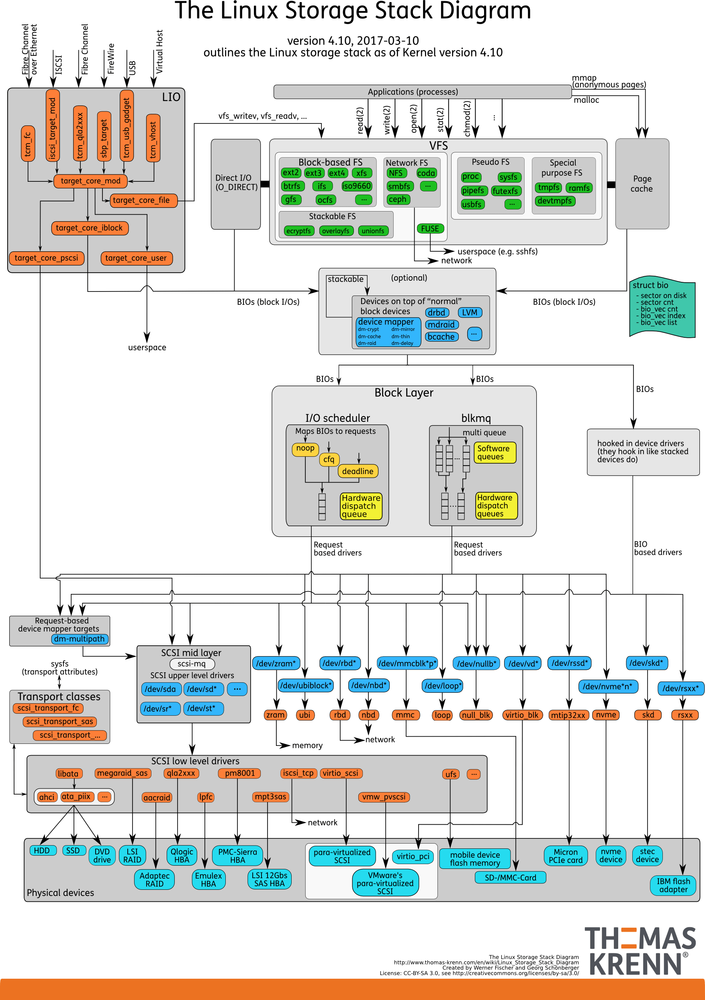

- 00 开篇词 别再让Linux性能问题成为你的绊脚石.md.html
- 01 如何学习Linux性能优化？.md.html
- 02 基础篇：到底应该怎么理解“平均负载”？.md.html
- 03 基础篇：经常说的 CPU 上下文切换是什么意思？（上）.md.html
- 04 基础篇：经常说的 CPU 上下文切换是什么意思？（下）.md.html
- 05 基础篇：某个应用的CPU使用率居然达到100%，我该怎么办？.md.html
- 06 案例篇：系统的 CPU 使用率很高，但为啥却找不到高 CPU 的应用？.md.html
- 07 案例篇：系统中出现大量不可中断进程和僵尸进程怎么办？（上）.md.html
- 08 案例篇：系统中出现大量不可中断进程和僵尸进程怎么办？（下）.md.html
- 09 基础篇：怎么理解Linux软中断？.md.html
- 10 案例篇：系统的软中断CPU使用率升高，我该怎么办？.md.html
- 11 套路篇：如何迅速分析出系统CPU的瓶颈在哪里？.md.html
- 12 套路篇：CPU 性能优化的几个思路.md.html
- 13 答疑（一）：无法模拟出 RES 中断的问题，怎么办？.md.html
- 14 答疑（二）：如何用perf工具分析Java程序？.md.html
- 15 基础篇：Linux内存是怎么工作的？.md.html
- 16 基础篇：怎么理解内存中的Buffer和Cache？.md.html
- 17 案例篇：如何利用系统缓存优化程序的运行效率？.md.html
- 18 案例篇：内存泄漏了，我该如何定位和处理？.md.html
- 19 案例篇：为什么系统的Swap变高了（上）.md.html
- 20 案例篇：为什么系统的Swap变高了？（下）.md.html
- 21 套路篇：如何“快准狠”找到系统内存的问题？.md.html
- 22 答疑（三）：文件系统与磁盘的区别是什么？.md.html
- 23 基础篇：Linux 文件系统是怎么工作的？.md.html
- 24 基础篇：Linux 磁盘I_O是怎么工作的（上）.md.html
- 25 基础篇：Linux 磁盘I_O是怎么工作的（下）.md.html
- 26 案例篇：如何找出狂打日志的“内鬼”？.md.html
- 27 案例篇：为什么我的磁盘I_O延迟很高？.md.html
- 28 案例篇：一个SQL查询要15秒，这是怎么回事？.md.html
- 29 案例篇：Redis响应严重延迟，如何解决？.md.html
- 30 套路篇：如何迅速分析出系统I_O的瓶颈在哪里？.md.html
- 31 套路篇：磁盘 I_O 性能优化的几个思路.md.html
- 32 答疑（四）：阻塞、非阻塞 I_O 与同步、异步 I_O 的区别和联系.md.html
- 33 关于 Linux 网络，你必须知道这些（上）.md.html
- 34 关于 Linux 网络，你必须知道这些（下）.md.html
- 35 基础篇：C10K 和 C1000K 回顾.md.html
- 36 套路篇：怎么评估系统的网络性能？.md.html
- 37 案例篇：DNS 解析时快时慢，我该怎么办？.md.html
- 38 案例篇：怎么使用 tcpdump 和 Wireshark 分析网络流量？.md.html
- 39 案例篇：怎么缓解 DDoS 攻击带来的性能下降问题？.md.html
- 40 案例篇：网络请求延迟变大了，我该怎么办？.md.html
- 41 案例篇：如何优化 NAT 性能？（上）.md.html
- 42 案例篇：如何优化 NAT 性能？（下）.md.html
- 43 套路篇：网络性能优化的几个思路（上）.md.html
- 44 套路篇：网络性能优化的几个思路（下）.md.html
- 45 答疑（五）：网络收发过程中，缓冲区位置在哪里？.md.html
- 46 案例篇：为什么应用容器化后，启动慢了很多？.md.html
- 47 案例篇：服务器总是时不时丢包，我该怎么办？（上）.md.html
- 48 案例篇：服务器总是时不时丢包，我该怎么办？（下）.md.html
- 49 案例篇：内核线程 CPU 利用率太高，我该怎么办？.md.html
- 50 案例篇：动态追踪怎么用？（上）.md.html
- 51 案例篇：动态追踪怎么用？（下）.md.html
- 52 案例篇：服务吞吐量下降很厉害，怎么分析？.md.html
- 53 套路篇：系统监控的综合思路.md.html
- 54 套路篇：应用监控的一般思路.md.html
- 55 套路篇：分析性能问题的一般步骤.md.html
- 56 套路篇：优化性能问题的一般方法.md.html
- 57 套路篇：Linux 性能工具速查.md.html
- 58 答疑（六）：容器冷启动如何性能分析？.md.html
- 加餐（一） 书单推荐：性能优化和Linux 系统原理.md.html
- 加餐（二） 书单推荐：网络原理和 Linux 内核实现.md.html
- 用户故事 “半路出家 ”，也要顺利拿下性能优化！.md.html
- 用户故事 运维和开发工程师们怎么说？.md.html
- 结束语 愿你攻克性能难关.md.html
- 捐赠
24 基础篇：Linux 磁盘I_O是怎么工作的（上）
你好，我是倪朋飞。
上一节，我们学习了 Linux 文件系统的工作原理。简单回顾一下，文件系统是对存储设备上的文件，进行组织管理的一种机制。而Linux 在各种文件系统实现上，又抽象了一层虚拟文件系统VFS，它定义了一组，所有文件系统都支持的，数据结构和标准接口。
这样，对应用程序来说，只需要跟 VFS 提供的统一接口交互，而不需要关注文件系统的具体实现；对具体的文件系统来说，只需要按照 VFS 的标准，就可以无缝支持各种应用程序。
VFS 内部又通过目录项、索引节点、逻辑块以及超级块等数据结构，来管理文件。
目录项，记录了文件的名字，以及文件与其他目录项之间的目录关系。
索引节点，记录了文件的元数据。
逻辑块，是由连续磁盘扇区构成的最小读写单元，用来存储文件数据。
超级块，用来记录文件系统整体的状态，如索引节点和逻辑块的使用情况等。
其中，目录项是一个内存缓存；而超级块、索引节点和逻辑块，都是存储在磁盘中的持久化数据。
那么，进一步想，磁盘又是怎么工作的呢？又有哪些指标可以用来衡量它的性能呢？
接下来，我就带你一起看看， Linux 磁盘I/O的工作原理。
磁盘
磁盘是可以持久化存储的设备，根据存储介质的不同，常见磁盘可以分为两类：机械磁盘和固态磁盘。
第一类，机械磁盘，也称为硬盘驱动器（Hard Disk Driver），通常缩写为 HDD。机械磁盘主要由盘片和读写磁头组成，数据就存储在盘片的环状磁道中。在读写数据前，需要移动读写磁头，定位到数据所在的磁道，然后才能访问数据。
显然，如果 I/O 请求刚好连续，那就不需要磁道寻址，自然可以获得最佳性能。这其实就是我们熟悉的，连续 I/O的工作原理。与之相对应的，当然就是随机 I/O，它需要不停地移动磁头，来定位数据位置，所以读写速度就会比较慢。
第二类，固态磁盘（Solid State Disk），通常缩写为SSD，由固态电子元器件组成。固态磁盘不需要磁道寻址，所以，不管是连续I/O，还是随机I/O的性能，都比机械磁盘要好得多。
其实，无论机械磁盘，还是固态磁盘，相同磁盘的随机 I/O 都要比连续 I/O 慢很多，原因也很明显。
对机械磁盘来说，我们刚刚提到过的，由于随机I/O需要更多的磁头寻道和盘片旋转，它的性能自然要比连续I/O慢。
而对固态磁盘来说，虽然它的随机性能比机械硬盘好很多，但同样存在“先擦除再写入”的限制。随机读写会导致大量的垃圾回收，所以相对应的，随机I/O的性能比起连续I/O来，也还是差了很多。
此外，连续I/O还可以通过预读的方式，来减少I/O请求的次数，这也是其性能优异的一个原因。很多性能优化的方案，也都会从这个角度出发，来优化I/O性能。
此外，机械磁盘和固态磁盘还分别有一个最小的读写单位。
机械磁盘的最小读写单位是扇区，一般大小为512字节。
而固态磁盘的最小读写单位是页，通常大小是4KB、8KB等。
在上一节中，我也提到过，如果每次都读写 512 字节这么小的单位的话，效率很低。所以，文件系统会把连续的扇区或页，组成逻辑块，然后以逻辑块作为最小单元来管理数据。常见的逻辑块的大小是4KB，也就是说，连续8个扇区，或者单独的一个页，都可以组成一个逻辑块。
除了可以按照存储介质来分类，另一个常见的分类方法，是按照接口来分类，比如可以把硬盘分为 IDE（Integrated Drive Electronics）、SCSI（Small Computer System Interface） 、SAS（Serial Attached SCSI） 、SATA（Serial ATA） 、FC（Fibre Channel） 等。
不同的接口，往往分配不同的设备名称。比如， IDE 设备会分配一个 hd 前缀的设备名，SCSI和SATA设备会分配一个 sd 前缀的设备名。如果是多块同类型的磁盘，就会按照a、b、c等的字母顺序来编号。
除了磁盘本身的分类外，当你把磁盘接入服务器后，按照不同的使用方式，又可以把它们划分为多种不同的架构。
最简单的，就是直接作为独立磁盘设备来使用。这些磁盘，往往还会根据需要，划分为不同的逻辑分区，每个分区再用数字编号。比如我们前面多次用到的 /dev/sda ，还可以分成两个分区 /dev/sda1和/dev/sda2。
另一个比较常用的架构，是把多块磁盘组合成一个逻辑磁盘，构成冗余独立磁盘阵列，也就是RAID（Redundant Array of Independent Disks），从而可以提高数据访问的性能，并且增强数据存储的可靠性。
根据容量、性能和可靠性需求的不同，RAID一般可以划分为多个级别，如RAID0、RAID1、RAID5、RAID10等。
RAID0有最优的读写性能，但不提供数据冗余的功能。
而其他级别的RAID，在提供数据冗余的基础上，对读写性能也有一定程度的优化。
最后一种架构，是把这些磁盘组合成一个网络存储集群，再通过NFS、SMB、iSCSI等网络存储协议，暴露给服务器使用。
其实在 Linux 中，磁盘实际上是作为一个块设备来管理的，也就是以块为单位读写数据，并且支持随机读写。每个块设备都会被赋予两个设备号，分别是主、次设备号。主设备号用在驱动程序中，用来区分设备类型；而次设备号则是用来给多个同类设备编号。
通用块层
跟我们上一节讲到的虚拟文件系统VFS类似，为了减小不同块设备的差异带来的影响，Linux 通过一个统一的通用块层，来管理各种不同的块设备。
通用块层，其实是处在文件系统和磁盘驱动中间的一个块设备抽象层。它主要有两个功能 。
第一个功能跟虚拟文件系统的功能类似。向上，为文件系统和应用程序，提供访问块设备的标准接口；向下，把各种异构的磁盘设备抽象为统一的块设备，并提供统一框架来管理这些设备的驱动程序。
第二个功能，通用块层还会给文件系统和应用程序发来的 I/O 请求排队，并通过重新排序、请求合并等方式，提高磁盘读写的效率。
其中，对 I/O 请求排序的过程，也就是我们熟悉的 I/O 调度。事实上，Linux 内核支持四种I/O调度算法，分别是NONE、NOOP、CFQ以及DeadLine。这里我也分别介绍一下。
第一种 NONE ，更确切来说，并不能算 I/O 调度算法。因为它完全不使用任何I/O调度器，对文件系统和应用程序的I/O其实不做任何处理，常用在虚拟机中（此时磁盘I/O调度完全由物理机负责）。
第二种 NOOP ，是最简单的一种 I/O 调度算法。它实际上是一个先入先出的队列，只做一些最基本的请求合并，常用于 SSD 磁盘。
第三种 CFQ（Completely Fair Scheduler），也被称为完全公平调度器，是现在很多发行版的默认 I/O 调度器，它为每个进程维护了一个 I/O 调度队列，并按照时间片来均匀分布每个进程的 I/O 请求。
类似于进程 CPU 调度，CFQ 还支持进程 I/O 的优先级调度，所以它适用于运行大量进程的系统，像是桌面环境、多媒体应用等。
最后一种 DeadLine 调度算法，分别为读、写请求创建了不同的 I/O 队列，可以提高机械磁盘的吞吐量，并确保达到最终期限（deadline）的请求被优先处理。DeadLine 调度算法，多用在 I/O 压力比较重的场景，比如数据库等。
I/O栈
清楚了磁盘和通用块层的工作原理，再结合上一期我们讲过的文件系统原理，我们就可以整体来看Linux存储系统的 I/O 原理了。
我们可以把Linux 存储系统的 I/O 栈，由上到下分为三个层次，分别是文件系统层、通用块层和设备层。这三个I/O层的关系如下图所示，这其实也是 Linux 存储系统的 I/O 栈全景图。
- （图片来自 Linux Storage Stack Diagram ）
根据这张 I/O 栈的全景图，我们可以更清楚地理解，存储系统 I/O 的工作原理。
文件系统层，包括虚拟文件系统和其他各种文件系统的具体实现。它为上层的应用程序，提供标准的文件访问接口；对下会通过通用块层，来存储和管理磁盘数据。
通用块层，包括块设备 I/O 队列和 I/O 调度器。它会对文件系统的 I/O 请求进行排队，再通过重新排序和请求合并，然后才要发送给下一级的设备层。
设备层，包括存储设备和相应的驱动程序，负责最终物理设备的I/O操作。
存储系统的 I/O ，通常是整个系统中最慢的一环。所以， Linux 通过多种缓存机制来优化 I/O 效率。
比方说，为了优化文件访问的性能，会使用页缓存、索引节点缓存、目录项缓存等多种缓存机制，以减少对下层块设备的直接调用。
同样，为了优化块设备的访问效率，会使用缓冲区，来缓存块设备的数据。
不过，抽象的原理讲了这么多，具体操作起来，应该怎么衡量磁盘的 I/O 性能呢？我先卖个关子，下节课我们一起来看，最常用的磁盘 I/O 性能指标，以及 I/O 性能工具。
小结
在今天的文章中，我们梳理了 Linux 磁盘 I/O 的工作原理，并了解了由文件系统层、通用块层和设备层构成的 Linux 存储系统 I/O 栈。
其中，通用块层是 Linux 磁盘 I/O 的核心。向上，它为文件系统和应用程序，提供访问了块设备的标准接口；向下，把各种异构的磁盘设备，抽象为统一的块设备，并会对文件系统和应用程序发来的 I/O 请求进行重新排序、请求合并等，提高了磁盘访问的效率。
思考
最后，我想邀请你一起来聊聊，你所理解的磁盘 I/O。我相信你很可能已经碰到过，文件或者磁盘的 I/O 性能问题，你是怎么分析这些问题的呢？你可以结合今天的磁盘 I/O 原理和上一节的文件系统原理，记录你的操作步骤，并总结出自己的思路。
欢迎在留言区和我讨论，也欢迎把这篇文章分享给你的同事、朋友。我们一起在实战中演练，在交流中进步。
© 2019 - 2023 Liangliang Lee. Powered by gin and hexo-theme-book.